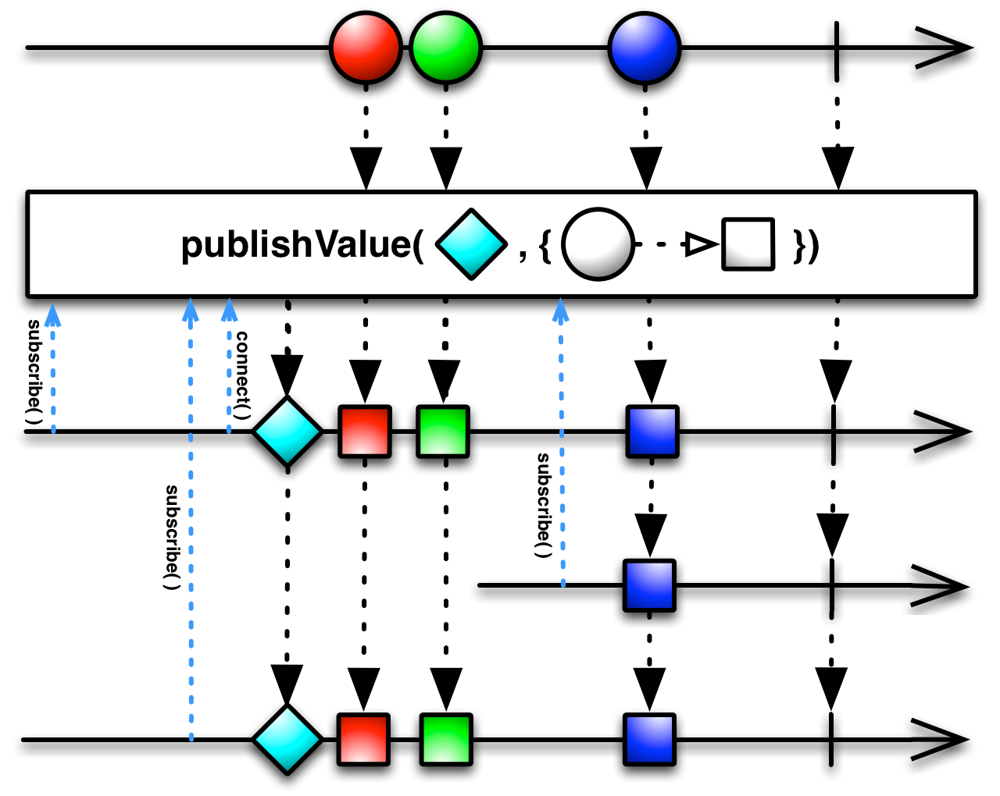

Under construction...
Publish¶
-
Observable.let(func)¶ Returns an observable sequence that is the result of invoking the selector on the source sequence, without sharing subscriptions. This operator allows for a fluent style of writing queries that use the same sequence multiple times.
- selector – {Function} Selector function which can use the source
- sequence as many times as needed, without sharing subscriptions to the source sequence.
Returns an observable {Observable} sequence that contains the elements of a sequence produced by multicasting the source sequence within a selector function.
-
Observable.let_bind(func)¶ Returns an observable sequence that is the result of invoking the selector on the source sequence, without sharing subscriptions. This operator allows for a fluent style of writing queries that use the same sequence multiple times.
- selector – {Function} Selector function which can use the source
- sequence as many times as needed, without sharing subscriptions to the source sequence.
Returns an observable {Observable} sequence that contains the elements of a sequence produced by multicasting the source sequence within a selector function.
-
Observable.multicast(subject=None, subject_selector=None, selector=None)¶ Multicasts the source sequence notifications through an instantiated subject into all uses of the sequence within a selector function. Each subscription to the resulting sequence causes a separate multicast invocation, exposing the sequence resulting from the selector function’s invocation. For specializations with fixed subject types, see Publish, PublishLast, and Replay.
Example: 1 - res = source.multicast(observable) 2 - res = source.multicast(subject_selector=lambda: Subject(),
selector=lambda x: x)Keyword arguments: subject_selector – {Function} Factory function to create an
intermediate subject through which the source sequence’s elements will be multicast to the selector function.subject – Subject {Subject} to push source elements into. selector – {Function} [Optional] Optional selector function which can
use the multicasted source sequence subject to the policies enforced by the created subject. Specified only if subject_selector” is a factory function.Returns an observable {Observable} sequence that contains the elements of a sequence produced by multicasting the source sequence within a selector function.
-
Observable.publish(selector=None)¶ Returns an observable sequence that is the result of invoking the selector on a connectable observable sequence that shares a single subscription to the underlying sequence. This operator is a specialization of Multicast using a regular Subject.
Example: res = source.publish() res = source.publish(lambda x: x)
- selector – {Function} [Optional] Selector function which can use the
- multicasted source sequence as many times as needed, without causing multiple subscriptions to the source sequence. Subscribers to the given source will receive all notifications of the source from the time of the subscription on.
Returns an observable {Observable} sequence that contains the elements of a sequence produced by multicasting the source sequence within a selector function.
-
Observable.publish_value(initial_value, selector=None)¶ Returns an observable sequence that is the result of invoking the selector on a connectable observable sequence that shares a single subscription to the underlying sequence and starts with initial_value.
This operator is a specialization of Multicast using a BehaviorSubject.
Example: res = source.publish_value(42) res = source.publish_value(42, lambda x: x.map(lambda y: y * y))
Keyword arguments: initial_value – {Mixed} Initial value received by observers upon
subscription.- selector – {Function} [Optional] Optional selector function which can
- use the multicasted source sequence as many times as needed, without causing multiple subscriptions to the source sequence. Subscribers to the given source will receive immediately receive the initial value, followed by all notifications of the source from the time of the subscription on.
Returns {Observable} An observable sequence that contains the elements of a sequence produced by multicasting the source sequence within a selector function.
